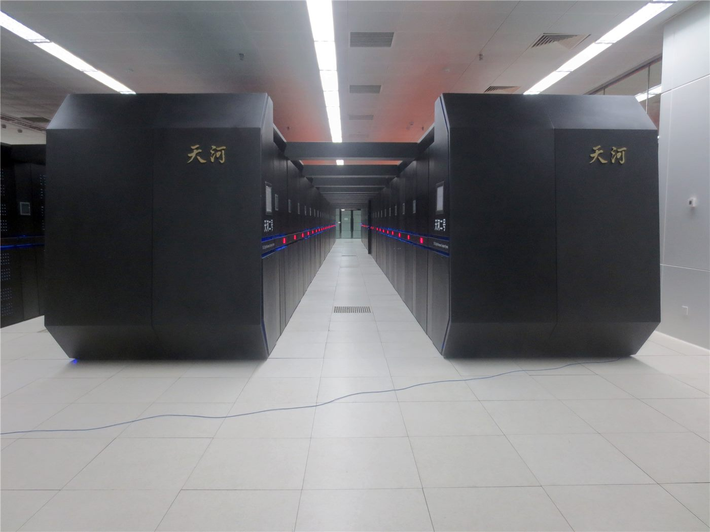

베선트 '미국, 중국과 AI 공동 위험 논의할 용의'
미국 재무장관이 중국과 인공지능의 공동 위험을 논의할 뜻이 있다고 밝혔다. 양국 정상회담을 앞둔 시점에 나온 발언으로, 기술 경쟁 속에서도 위험 관리 영역을 따로 두겠다는 신호로 읽힌다.
유종한 기자 · 2026.09.26
橋국제

스콧 베선트 미국 재무장관이 미국은 중국과 인공지능(AI)의 공동 위험을 논의할 용의가 있다고 말했다.
광고 문의 · 300×250이 발언은 미·중 정상회담을 앞둔 시기에 나왔다. 반도체 수출 통제와 관세를 둘러싼 갈등이 이어지는 가운데, 위험 관리는 별도의 의제로 다루겠다는 취지로 해석된다.
'공동 위험'은 어느 한쪽의 이익이 아니라 양쪽 모두에 손실을 끼치는 상황을 뜻한다. 자율 무기의 오작동, 생물학·화학 분야로의 오용, 금융 시스템의 연쇄 오류 등이 거론된다.
경쟁과 관리의 분리
기술 경쟁과 위험 관리를 분리하는 접근은 냉전기 핵 군축 협상에서 선례를 찾을 수 있다. 서로를 경쟁 상대로 두면서도 파국을 막는 규칙은 공유하는 방식이다.
다만 AI는 핵무기와 달리 개발 주체가 국가에 한정되지 않고, 검증 수단도 확립돼 있지 않다. 합의가 나오더라도 이행을 확인하는 문제가 남는다.
국제 사회에서도 AI 규제 논의가 이어지고 있다. 통제를 벗어난 위험을 경고하며 핵무기에 준하는 관리 체계를 요구하는 목소리가 나오는 한편, 규제가 혁신을 늦춘다는 반론도 만만치 않다.
양쪽 주장은 사실 인식보다 위험의 크기를 어떻게 추정하느냐에서 갈린다. 본지는 어느 추정이 옳다고 단정하지 않되, 논의가 정상회담 의제에 실제로 올라가는지를 기준으로 진전을 판단하려 한다.